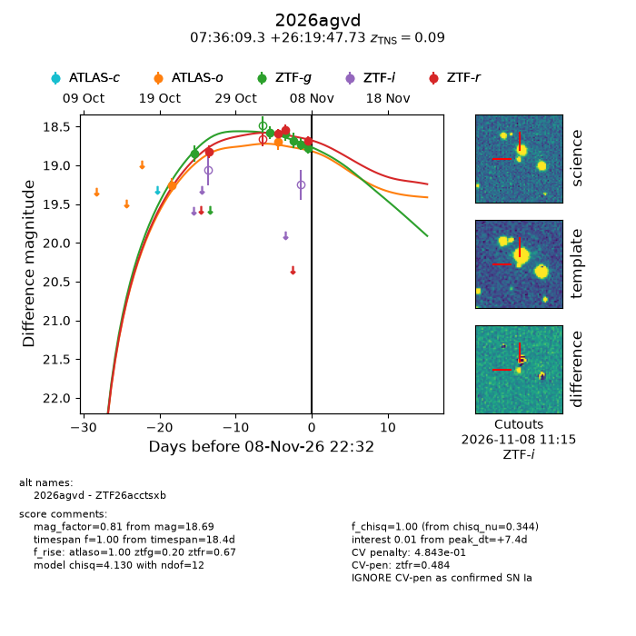
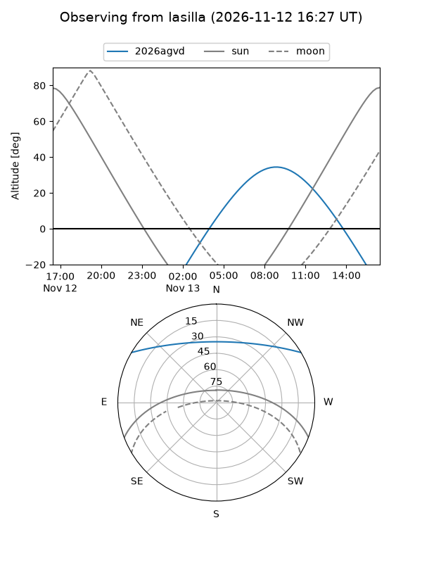
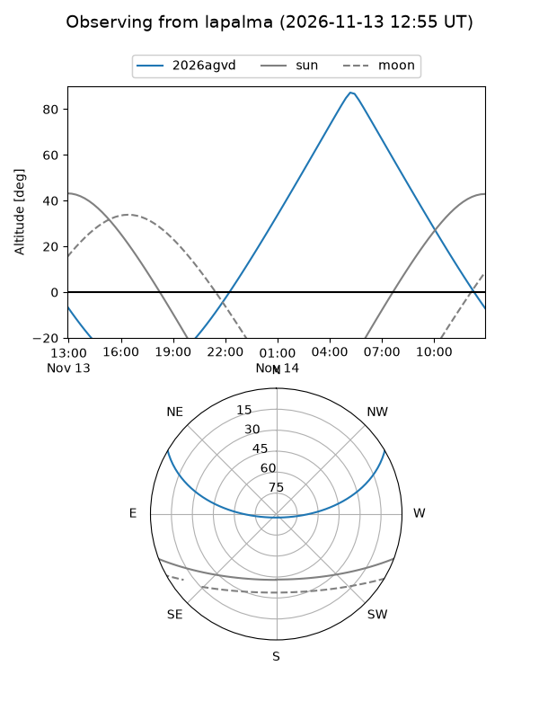
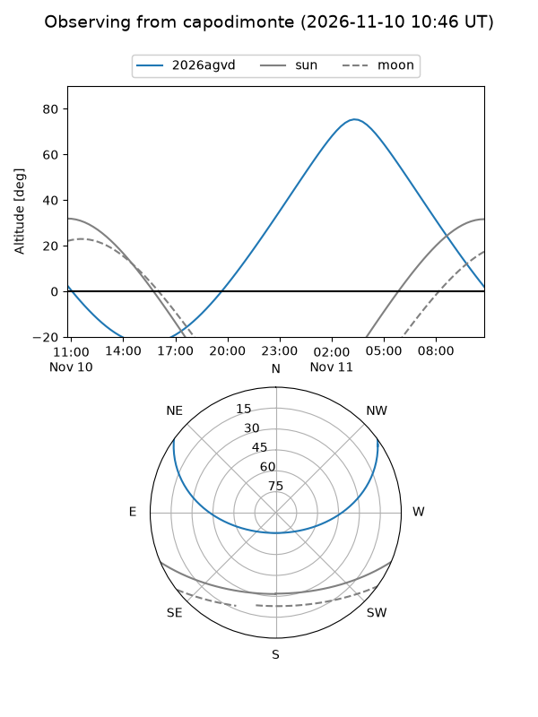
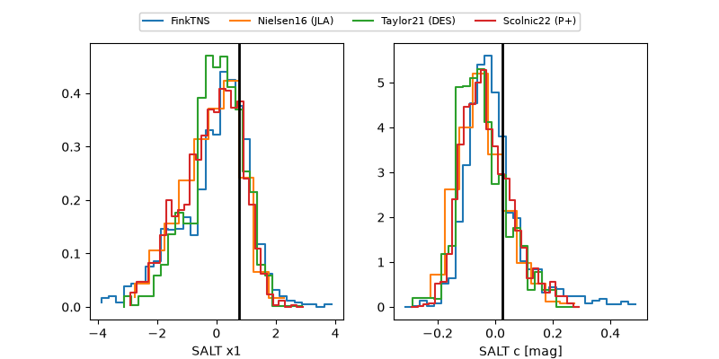

2026agvd
Target 2026agvd at 2026-11-08 22:34
Aliases and brokers:
FINK-ZTF: ztf.fink-portal.org/ZTF26acctsxb
Lasair-ZTF: lasair-ztf.lsst.ac.uk/objects/ZTF26acctsxb
ALeRCE-ZTF: alerce.online/object/ZTF26acctsxb
YSE-PZ: ziggy.ucolick.org/yse/transient_detail/2026agvd
TNS name: wis-tns.org/object/2026agvd
Direct TNS query: direct search
alt names
ZTF26acctsxb (ztf,fink_ztf)
2026agvd (tns,yse)
Coordinates:
equatorial (ra, dec) = 114.0389,+26.32993
equatorial (HMS+DMS) = 07:36:09.34,+26:19:47.73
galactic (l, b) = (193.1919,+20.90983)
Flags:
TNS type: SN Ia
TNS redshift: 0.0900
likely cv: !!
CV pen: 0.48433684488283396
peak dt: +7.4
Photometry:
last atlaso=18.70, ztfg=18.77, ztfr=18.69
2 atlaso, 6 ztfg, 4 ztfr detections
Lightcurve

Visibility



Additional plots
